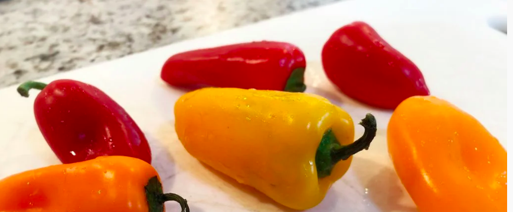
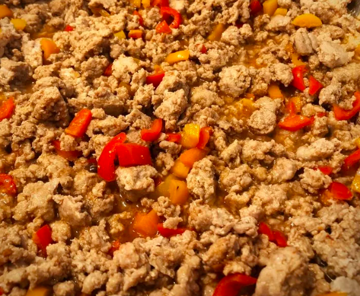

"As I said in the intro, I used bell peppers, however, feel free to use whatever you have on hand. Or, if you're craving some traditional Bolognese, use onions, celery, and carrots.

"Once your veggies are chopped, add them to the pot along with your ground meat. I used ground turkey as it is healthier and was the only meat I had on hand. Season with fresh and powdered garlic, salt, paprika, and pepper. Cook until the meat is just short of cooked and the bell peppers have softened. They will continue to cook for much longer so be sure not to overcook them in this step."

"Bring the heat down to low and add the can of tomato sauce and Worcester sauce. Mix to evenly incorporate, then pour in the heavy cream and lemon juice. Taste and season to your likings if needed."
"Add the fettuccine pasta! Note, It will take a while for the pasta to soften and it will stick to the bottom of the pan so make sure to stir constantly. Turn the heat up to high and when pasta has softened to the point that it can all fit in the pot without sticking up, add chicken broth (until pasta is mostly covered), mix, and put the cover on the pot. After 3-4 minutes, take the cover off and stir. Add more chicken broth if needed and repeat until the pasta is completely cooked. Though it may take a little longer, cooking the pasta in the sauce enhances the flavor and makes a noticeable difference."
"You're finished! Serve right away and garnish with basil. Thanks for viewing this instructable! If you liked it, please give it a vote in the One Pot Meals Speed Challenge!"